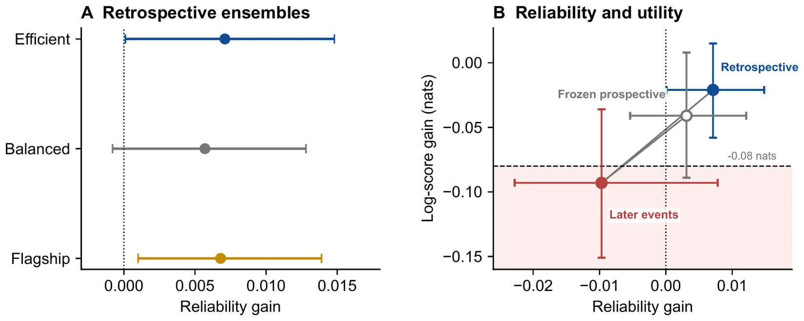
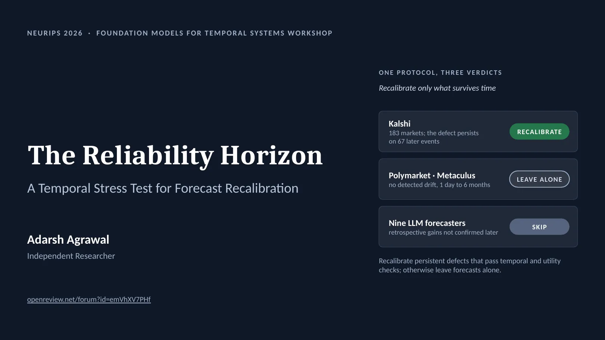
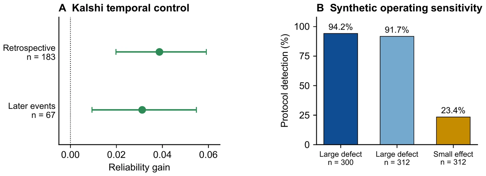

Poster at the NeurIPS 2026 Workshop on Foundation Models for Temporal Systems
The Reliability HorizonA Temporal Stress Test for Forecast Recalibration
A recalibration map can look helpful in hindsight and still fail once deployed. For nine LLM forecasters, a small retrospective gain did not survive multiplicity correction, and the efficient ensemble’s map lowered log score by 0.093 nats on later events. The same three-gate protocol still recalibrates Kalshi, whose gain persists on 67 later events (+0.0312).

Abstract
Recalibration that helps retrospectively can fail once deployed. We introduce the reliability horizon, a deployment protocol that requires a calibration gain to survive three checks: a balanced audit across lead times, utility guardrails, and independent temporal validation. On 1,481 resolved Polymarket markets, including 633 observed at every horizon, calibration shows no detected degradation from one day to six months. Metaculus shows the same pattern. Kalshi degrades sharply with horizon, and the protocol returns recalibrate, with the gain persisting on later events. For nine language-model forecasters, small retrospective ensemble gains fail multiplicity correction and are not confirmed on 111 later events or 312 frozen prospective outcomes. The protocol blocks deployment. Smoother Platt and beta maps reduce log-score penalties but do not change this decision. Synthetic controls detect injected defects in 91.7% of runs at the prospective sample size, and power analysis quantifies the effects that remain unresolved. The protocol recalibrates persistent defects that pass temporal and utility checks and leaves forecasts alone when those checks do not establish a benefit.
Key findings
- +0.0312
Kalshi’s reliability gain on 67 later events, after a retrospective gain of +0.0387 [+0.0198, +0.0591] on 183 markets. Utility checks pass, so the protocol returns recalibrate.
- Holm p = .1494
Familywise screen result for every LLM tier. Two pointwise intervals exclude zero, but the smallest raw p, 0.0498, exceeds the first Holm threshold of 0.05/3 ≈ 0.0167, so the screen returns skip.
- −0.093 nats
Later-event log-score change for the efficient ensemble’s map (95% CI [−0.151, −0.036]). Trusting the retrospective interval would have shipped this loss.
- +0.0031
Efficient-ensemble reliability gain on 312 resolved frozen prospective outcomes (95% CI [−0.0054, +0.0121]). Every tier’s interval includes zero.
- 91.7%
Share of 1,000 simulated runs in which the full protocol detects an injected defect at the prospective sample size. A small +0.007 effect is detected in only 23.4%, so skip here means unresolved, not zero.
Talk slides

The protocol
The reliability horizon treats recalibration as a deployment decision. A fitted map must clear three gates in order, and each gate can stop it:
- Screen. A Holm-controlled reliability gain across the three model tiers; a single control needs a positive 95% CI. Unresolved reliability at any stage returns skip.
- Utility. 90% lower bounds above −0.08 nats for log score and −0.02 for decision loss. An established gain that fails utility returns reject; one that passes becomes a candidate, which is not approval.
- Temporal. Gain and utility re-established on later events, with a frozen prospective check for model forecasts. Passing returns recalibrate.
Reliability gain (Δrel) is the drop in binned reliability error after applying the map, and Δlog is its log-score gain in nats. The 0.08-nat margin equals log(0.65/0.60).
Crowd calibration is venue-specific
The crowd audit fixes event identity, so every horizon compares the same markets. On 633 Polymarket markets observed at all five horizons, from one day to six months, neither Friedman nor Page tests detect a horizon effect, and recalibration stays within ±0.02 ECE of a no-op at every horizon. Equivalence holds at ±0.04 (p = 0.021) but not at ±0.02 (p = 0.107), so the paper reports no detected trend rather than equivalence at the tighter margin.
| Venue | Markets | ECE range | Trend p | Max contrast [95% CI] | Decision |
|---|---|---|---|---|---|
| Polymarket | 633 | .014–.030 | .412 | +.016 [−.004, +.036] | Left alone |
| Metaculus | 389 | .019–.031 | .351 | +.012 [−.007, +.032] | Left alone |
| Kalshi | 183 | .034–.148 | < .001 | +.114 [+.062, +.173] | recalibrate |
The gate still says yes to real defects
A protocol that never recalibrates would be useless. Kalshi shows this one can: its reliability gain is +0.0387 retrospectively and +0.0312 on 67 later events, both intervals excluding zero, and its later-event log-score change (+0.021, 95% CI [−0.031, +0.074]) passes the utility gate.
In simulation, a known logistic distortion is detected in 94.2% of runs with 300 validation events and 91.7% with 312. The 80%-power thresholds, about 0.015 in reliability at 111 later events and 0.010 at 312 prospective outcomes, sit above the +0.007 model signal, so the model result is unresolved rather than zero. The 0.093-nat later loss, by contrast, exceeds the 0.052-nat detection threshold and its 95% CI excludes zero, so score deterioration is established, though not beyond the 0.08-nat tolerance. Smoother Platt and beta maps reduce the log-score penalty but lose the reliability gain, so they do not change the decision.

Scope and limitations
- Panel selection
- The balanced panel is 42.7% of markets and favors longer-lived, more liquid markets (median volume $487k versus $218k), though excluded markets show similar near-term ECE.
- Sparse long horizons
- Only 8 of 21 six-month prospective outcomes have resolved, so most long-horizon prospective evidence is three-month evidence.
- Knowledge in weights
- As-of-date retrieval excludes future documents but not what the models learned in training; frozen predictions remove post-resolution querying.
- Operational tolerances
- Margins are application-specific, and small reliability effects remain below these panels’ detection thresholds.
The decision itself is stable. Log-score tolerances from 0.04 to 0.16 nats, maturity and cohort splits of the prospective set, and bounds that assign all 74 pending outcomes either way all leave the model maps at skip.
Reproducibility
The reproducibility package contains a pinned Python environment, deterministic analysis scripts, per-row temporal-validity decisions, prospective registration and freeze timestamps, cached snapshots for all three venues, inference settings and prompts, and machine-readable table and figure values. All analyses regenerate without new model API calls, and the package has been checked in a clean environment.
Cite this paper
@inproceedings{agrawal2026reliabilityhorizon,
title={The Reliability Horizon: A Temporal Stress Test for Forecast Recalibration},
author={Agrawal, Adarsh},
booktitle={NeurIPS 2026 Workshop on Foundation Models for Temporal Systems: From Forecasting to World Modeling},
year={2026},
url={https://openreview.net/pdf?id=emVhXV7PHf}
}